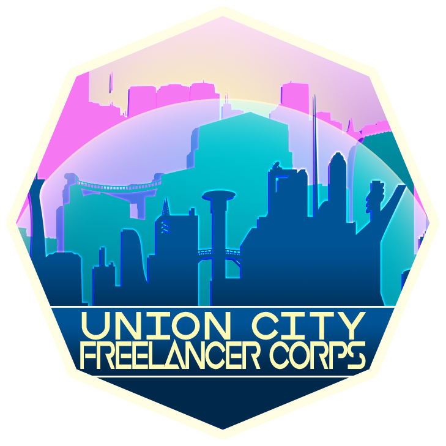

Cultures
Explore the peoples of Alterra, including humans, dwarves, orcs, halflings, Ormyri, and more.
Browse CulturesA Federation archive for the worldbuilding, cultures, magic, guilds, and characters of Alterra.

The Freelance Saga Wiki is a personal worldbuilding database for the Federation of Alterra, a magitech fantasy setting shaped by the Cataclysm, the Riftlands, guild politics, ancestral cultures, and the rise of a fragile multicultural Federation.
This site is designed for readers, tabletop players, game masters, and publishers who want an organized reference for the setting.
Explore the peoples of Alterra, including humans, dwarves, orcs, halflings, Ormyri, and more.
Browse CulturesReview the major guild structures: cleric orders, arena fighters, academic wizards, theater rogues, and sorcerer advocates.
Browse GuildsMeet the core party and use the bonus character starter generator to create new NPC ideas.
Meet the PartyThis site collects worldbuilding notes, setting documents, maps, charts, character profiles, magic systems, and story material in a format that feels like an in-world codex.